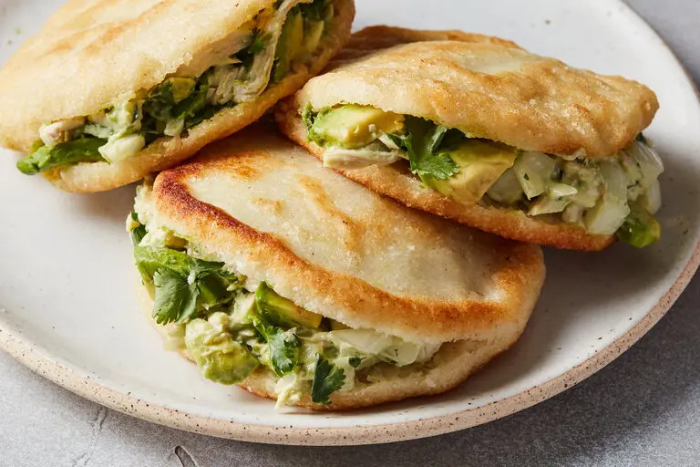

Delicious Arepa recipe

The queen meal of Venezuelan gastronomy
Historically the arepas have been a fundamental part in the daily lives
of Venezuelans. Breakfast? Arepa. Lunch? Arepa. Dinner? Yes, you guessed it.
Arepas. Fritas, asadas, andinas. Many tastes - many arepas.
Ingredients
- 2 cups grams pre-cooked corn flour (masarepa)
- 2 1/2 cups water
- 2 tablespoons vegetable oil
- Salt
- 2 tablespoons butter
- 250 grams cheese
Steps
- Mix the dough: In a bowl, combine warm water with salt. Gradually add the corn flour, mixing with your fingers until a soft, moist dough forms.
- Shape the arepas: Divide the dough into equal portions. Roll each portion into a ball, then flatten them into disks about 1/2 inch thick and 2-3 inches in diameter.
- Heat the pan: Place a griddle, cast-iron pan, or non-stick pan over medium heat. Add a thin layer of oil to coat the bottom.
- Cook the arepas: Carefully place the arepas on the hot pan. Cook for 3-4 minutes per side, or until golden brown.
- Oven finish (Optional):For a softer inside, preheat your oven to 350°F (175°C). After pan-frying the arepas, transfer them to a baking sheet and bake for an additional 10 minutes.
- Serve and enjoy! Your arepas are done. Now you can server them warm on their own or split open to fill with various ingredients like shredded meats, cheese, beans, or avocado.
In this case we're going to eat butter and cheese filled arepas
- Open split the arepas carefully. Add a tablespoon of butter and a good portion of cheese of your preference
Tips
- If the dough feels dry, add a little more water by the tablespoon until it reaches a soft but manageable consistency.
- Wet your hands with a little water to prevent the dough from sticking while shaping the arepas.
- Don't overcrowd the pan when cooking. Cook the arepas in batches if necessary.
- Traditionally, arepas are cooked on a budare, a preheated clay griddle. But a regular pan works just fine!
In Venezuela you can see people eating arepas at any hour in the day. But if you're in the streets in the morning, you might rather go with a hot empanada with guasacaca